SSTF Hardware ENVIR Config¶
Material list & check¶
| name | quantity |
|---|---|
| BMC serial port cable | x 1 |
| BIOS serial port cable | x 1 |
| USB to LAN device | x 1 |
| RSC2 To SUT Power supply cable | x 2 |
| RSC2 Power supply cable | x 2 |
| Host | x 1 |
| RSC2 Box | x 1 |
| KVM Remote | x 1 |
| Host-SUT & SUT-RSC2 cable | x 2 |
| Switch | x 1 |
| SUT | x 1 |
BIOS cable link & check¶
connection display¶
BIOS cable is used to access the BIOS of the SUT on Host. One end of bios cable link the USB port of the HOST and the other end is link SUT net port, as shown below.
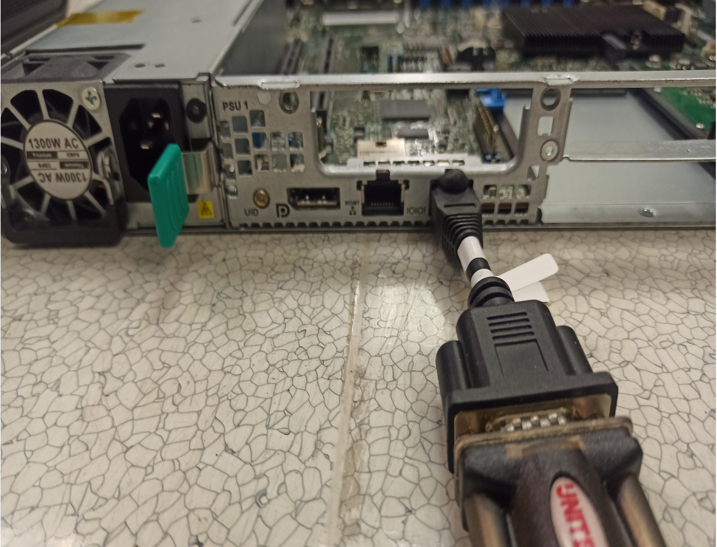
Open the MobaXterm app

After the application starts, enter the session page
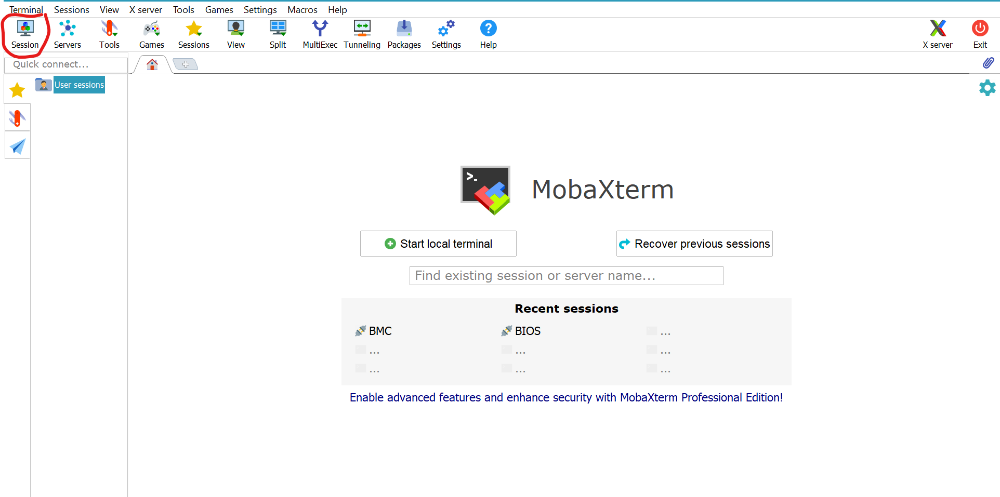
Select Serial option
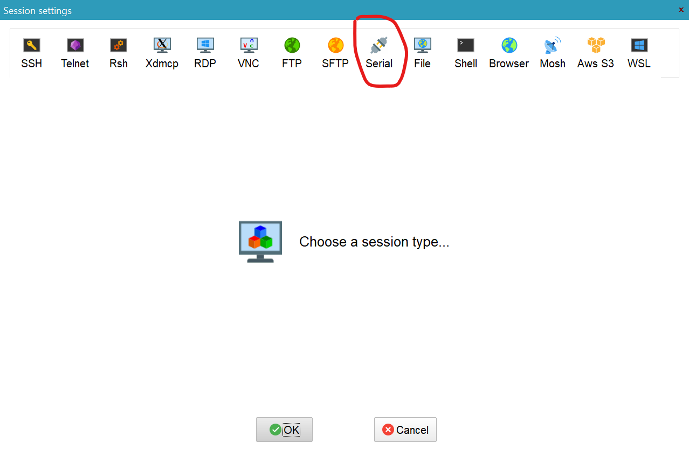
Select the serial port number for connecting the bios cable ,and select 115200 Speed(bps).
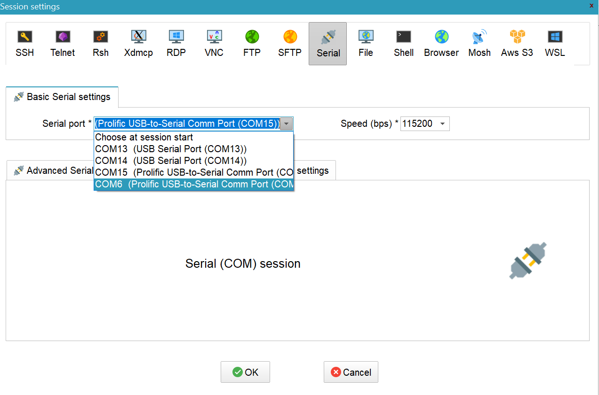
click ok

Double-click the Serial option you just added ,Then press Enter,If the Bios set-up page is displayed, Indicates that the connection is successful
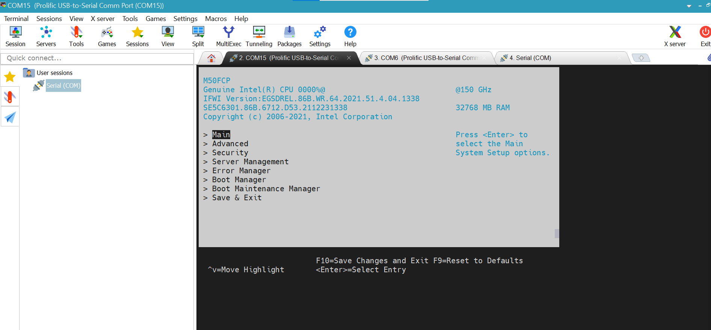
Notice: Do not select the wrong Port number and speed value. If the BMC login prompt is not displayed at the end, check the link of the bios cable.
BMC cable link & check¶
connection display¶
BMC cable is used to access the BMC of the SUT on Host. One end of BMC cable link the USB port of the HOST and the other end is inserted into the J18 position on the board.
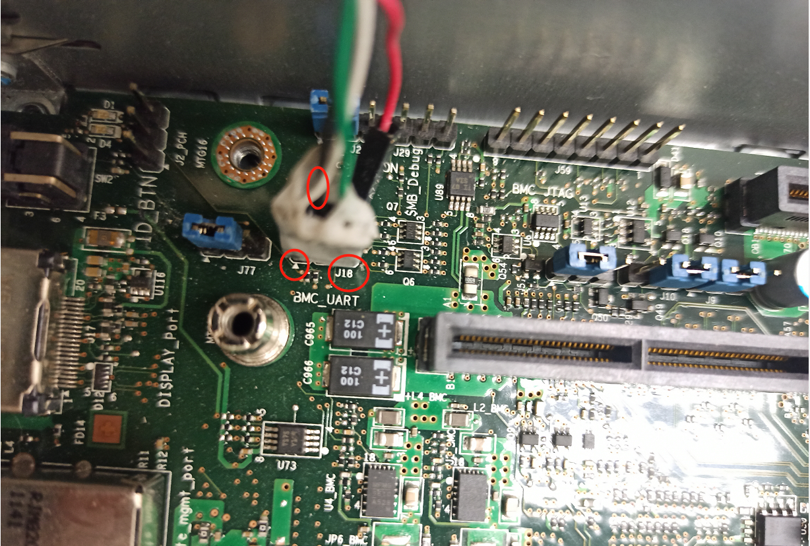
Notice: When inserted into the board, the white line should be aligned with the small triangle on the pictured above
connection verification¶
Open the MobaXterm app 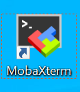
Go to the Session page
Select Serial option

Select the serial port number for connecting the BMC cable ,and select 115200 Speed(bps).

notice: the serial port numbers of BMC and bios are different
click ok
Double-click the Serial option you just added ,Then press Enter,If the BMC login page is displayed, Indicates that the connection is successful
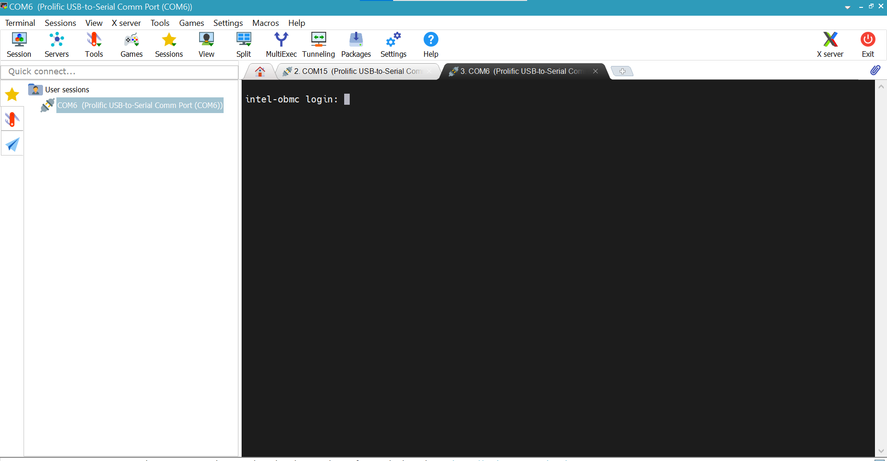
Notice: Do not select the wrong Port number and speed value. If the BMC login prompt is not displayed at the end, check the link of the BMC cable and debug again.
RSC2 link & check¶
introduction¶
Using a Remote System Controller 2 (RSC2), a user can remotely control a system under test (SUT) located anywhere in the world. The RSC2 gives the ability to control 2 AC power supplies, DC power, DC reset, and 8 jumpers on the SUT’s baseboard. It also performs AC/DC power cycling via a shared USB drive. The shared USB drive can be used to copy files or test program to the SUT, and can be further used to install an operating system remotely.
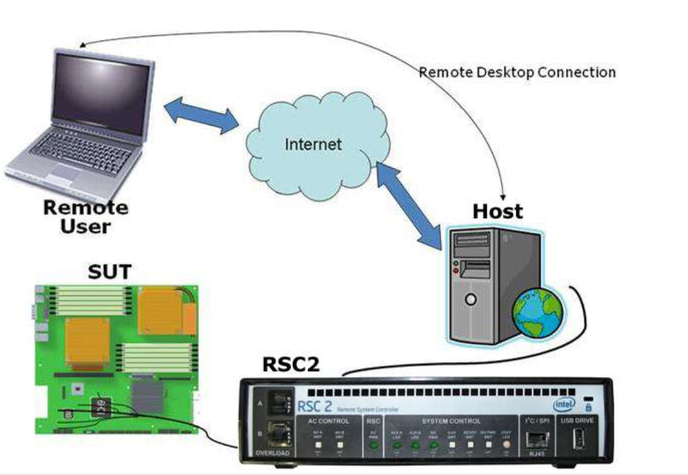
connection display¶
Follow these steps to begin using your RSC2
Install the software package found on the RSC2 installation media.
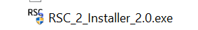
go to Windows Services manager and ensure the RSC2 Server service is Started.
Attach the RSC2 box to the host computer and the SUT by connecting the following mandatory connections:
a. AC IN A must be plugged into the wall.
b. AC OUT A must be plugged into the SUT’s power supply.
c. HOST USB must be connected to any of the host system’s USB ports.
d. SERVER USB must be connected to any of the SUT’s USB ports.
e. Insert a USB flash drive into the “USB DRIVE” connector on the front panel of the RSC2
Your system should look like this when done:
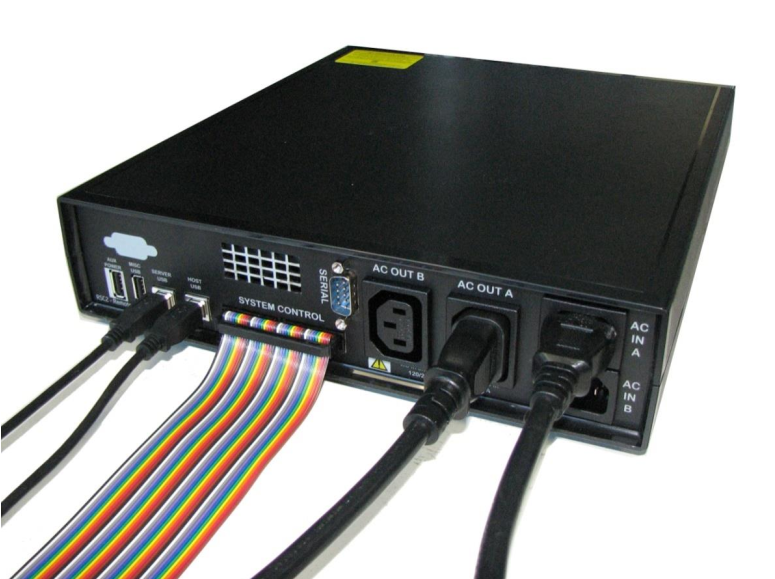
4)The other end of the front panel cable is inserted into the SSI_FRONT_PANEL position on the SUT
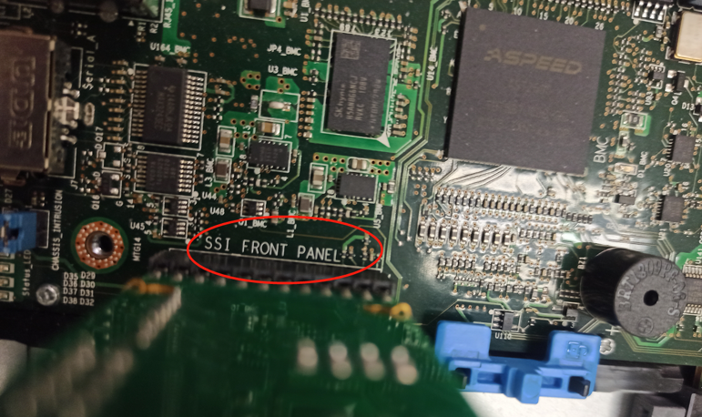
connection verification¶
Launch the software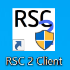
Click the ‘Add Host’ button to add a new RSC2
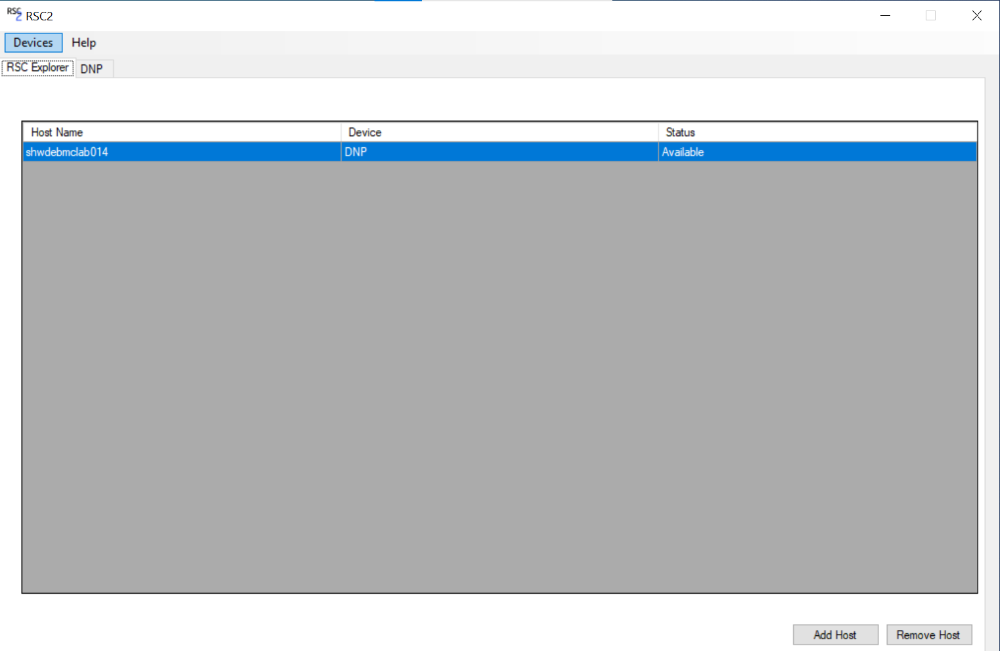
Select Local and click Find
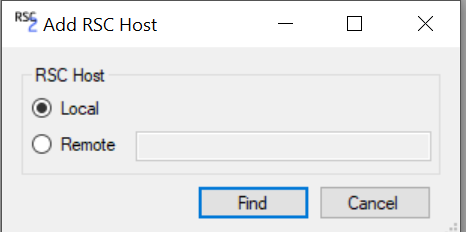
double click the searched option
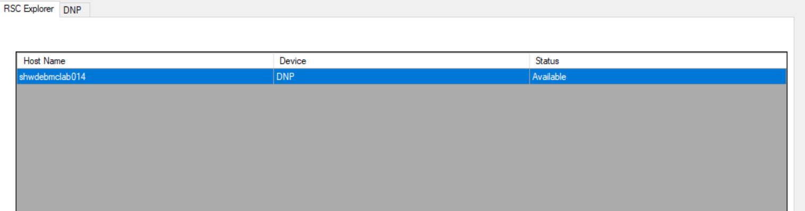
Searched option ：displays the host name and device name
SUT can be controlled through RSC2 ,the page display after entering is as shown in the figure below
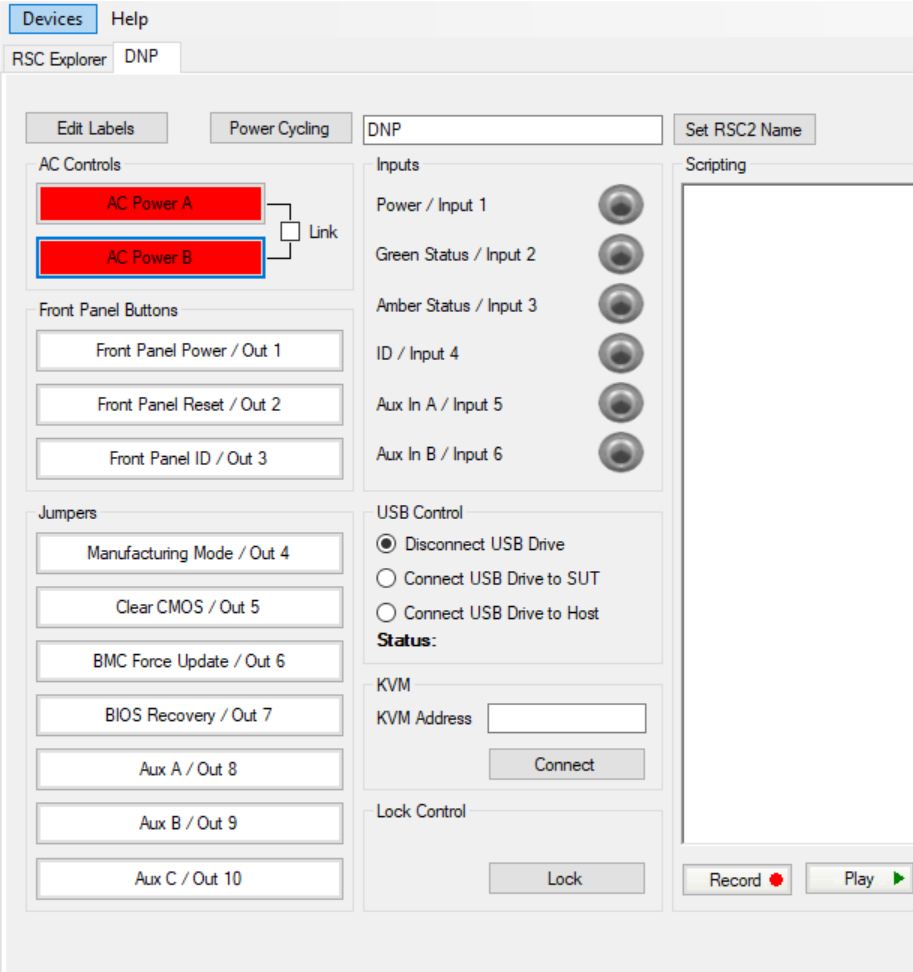
Press AC power a and AC power B to turn the green display into green and check the power failure of SUT. If the power failure is successful, it indicates that the rsc2 connection is successful
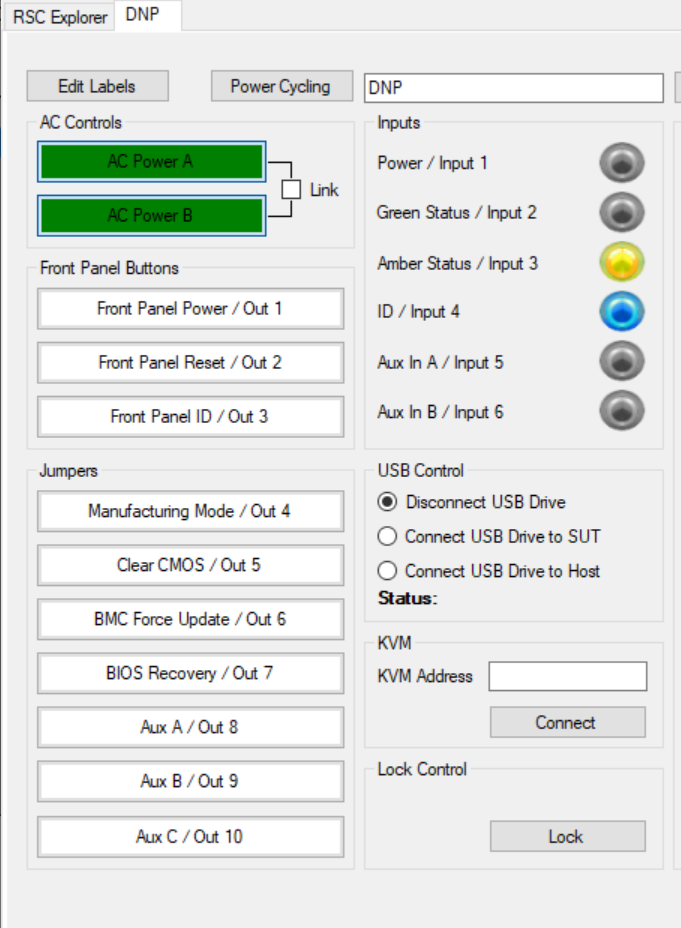
If you want to use RSC2 for anchor jumping control or have other problems during connection, please refer to RSC2 User Manual.pdf